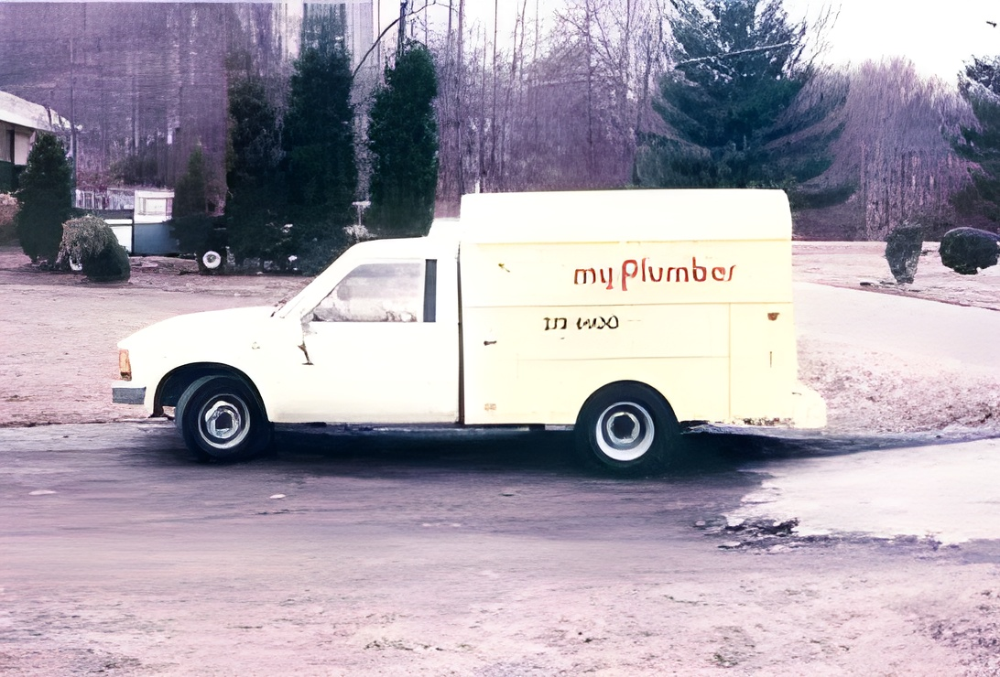

Our Company
In 1968 Joe Manning sr began working as an independent plumber out of his garge . His goal was simple to provide quality dependable and affordable plumbing and heating services to residental customers. If he did that he knew his business would grow. Today Joe manning jr. is still committed to the same level of service and quality that made his father a household name in albuquerque area.
`Joe the Plumber Facts
- Family Owned and operated since 1968
- Over 40 on-the-road licensed technicians and 15 support peronnel
- Winner of Regional Best Customer Service Award
- 24/7 service 365 days a year
- All work comes with a 100% customer-satisfactiojn guarantee
Picture of Joe Manning Sr. working on a fauct near his work van. Crica. 1970
1984
Joe Gives Back
With our deep roots in the community, we're committed to helping our neighbors. Read more>